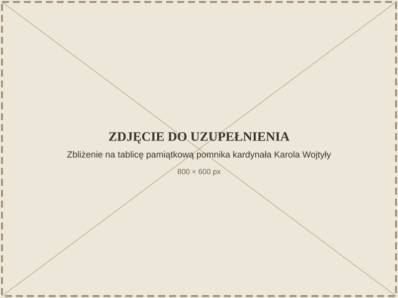

Route stop 3 / 4
Monument Commemorating Cardinal Karol Wojtyła's Stay
Recording
0:00 / 0:00
Prefer to read? Expand the transcript


How to get there
Click the map to zoom
The mini-map is currently unavailable.
Location
Wyjście z Parku Zdrojowego, 24-140 Nałęczów
Directions
Accessibility